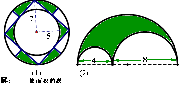

很多数学题
2009-02-07
假期自我测试题一、 填空1．0.09: =1: ( )= =4÷( )=( )%=( )成2、( EQ \F(1,15) ＋ EQ \F(2,17) )×15×17 = 0.8: 则x= 3、把15.6%、 、 和 四个数按照从大到小排列起来是：（ ）>（ ）>（ ）>（ ）． 4、一批布料，如果做套装（一件上衣一条裤子为一套），可做12套，如果只做上衣，可做20件，要是只做裤子可以做 条5、甲数是240，甲数比乙数大20%，乙数是______6、将一个圆平均分成1000个完全相同的小扇形，割拼成近似的长方形的周长比原来圆周长多10厘米，这个长方形的面积是 平方厘米。7、右图是六（6）班期末考试数学成绩统计图 （1）该班共有学生（ ）人；（2）分数在（ ）~（ ）的人数最多，占全班人数的（ ）%；（3）这次考试的及格率是（ ）%；（4）如果90分以上为优秀，这次考试的优秀率是（ ）%。8、已知参加计算机兴趣班的有20人，计算机兴趣班的人数是美术兴趣班的 ，美术兴趣班的人数是合唱队的 ，参加合唱队的有 人。9、某保险公司今年7月份的营业额为5600万元。如果按营业额的5％缴纳营业税，7月份应缴纳营业税款 万元10．如图，整个圆表示某班参加课外活动的总人数，跳绳的人数占30%，表示踢毽的扇形圆心角是60°，踢毽和打篮球的人数比是 ，那么表示参加“其它”活动的人数占总人数的 %．踢毽 篮球 跳绳 其它二、 计算1．阅读对人成长的影响是巨大的，一本好书往往能改变人的一生．1995年联合国教科文组织把每年4月23日确定为“世界读书日”．图8是某校三个年级学生人数分布扇形统计图，其中八年级人数为408人，表（1）是该校学生阅读课外书籍情况统计表．请你根据图表中的信息，解答下列问题：（1）求该校八年级的人数占全校总人数的百分率．（2）求表（1）中 的值．图8 八年级 九年级38％ 七年级28％ （3）该校学生平均每人读多少本课外书？图书种类 人次 百分比 科普常识 840名人传记 816 34％ 漫画丛书 25％ 其它 144 6％表（1）2、一个长5厘米、宽3厘米的长方形，沿对角线对折后，得到下左图所示几何图形，阴影部分周长是多少厘米。第2题3、下图阴影部分的面积是多少平方厘米。第3题4、一列火车从甲地驶往乙地，前3小时行了全程的 ，这时离乙地还有330千米，甲乙两地相距多少千米？5、(6分)公园只售两种门票：个人票每张5元，10人一张的团体票每张30元，购买10张以上团体票者可优惠10%（1）甲单位45人逛公园，按以上规定买票，最少应付多少钱？（2）乙单位208人逛公园，按以上规定买票，最少应付多少钱？6.求下列图形中阴影部分的面积：(1) (2) 解：7.我国石油进口总量11月份的进口量比10月进口量多15%,由于受金融危机的影响,11月份的总费用反而比10月份降低8%.求11月石油单价相对于10月份降低百分之几?

这是一张试卷的题量，你不可能都不会，肯定是你懒，不想做，看要开学了就到百度求助，呵呵，没人会帮你的……听人劝吃饱饭，你就辛苦一下吧！